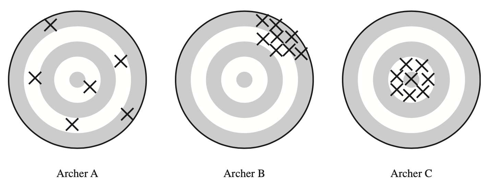
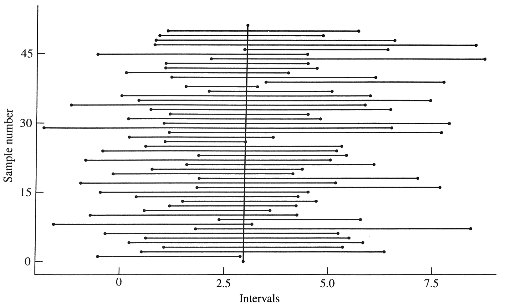
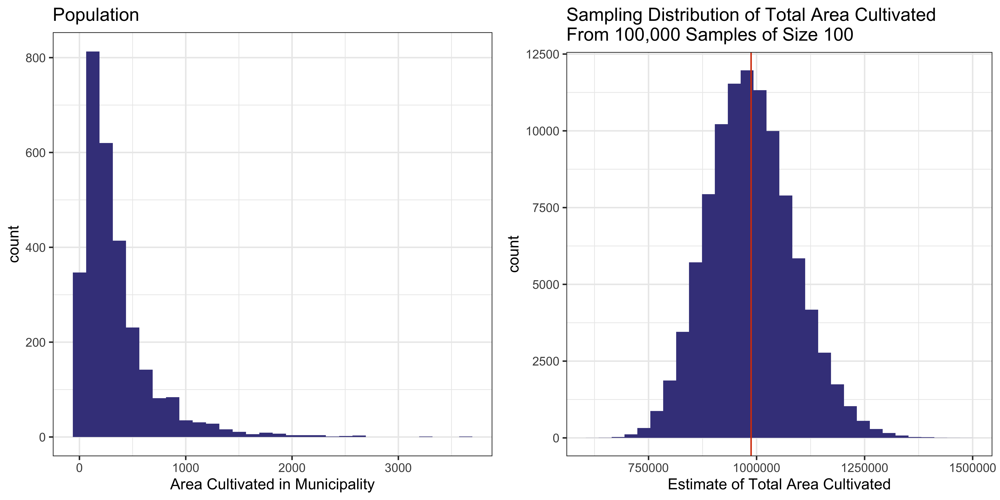
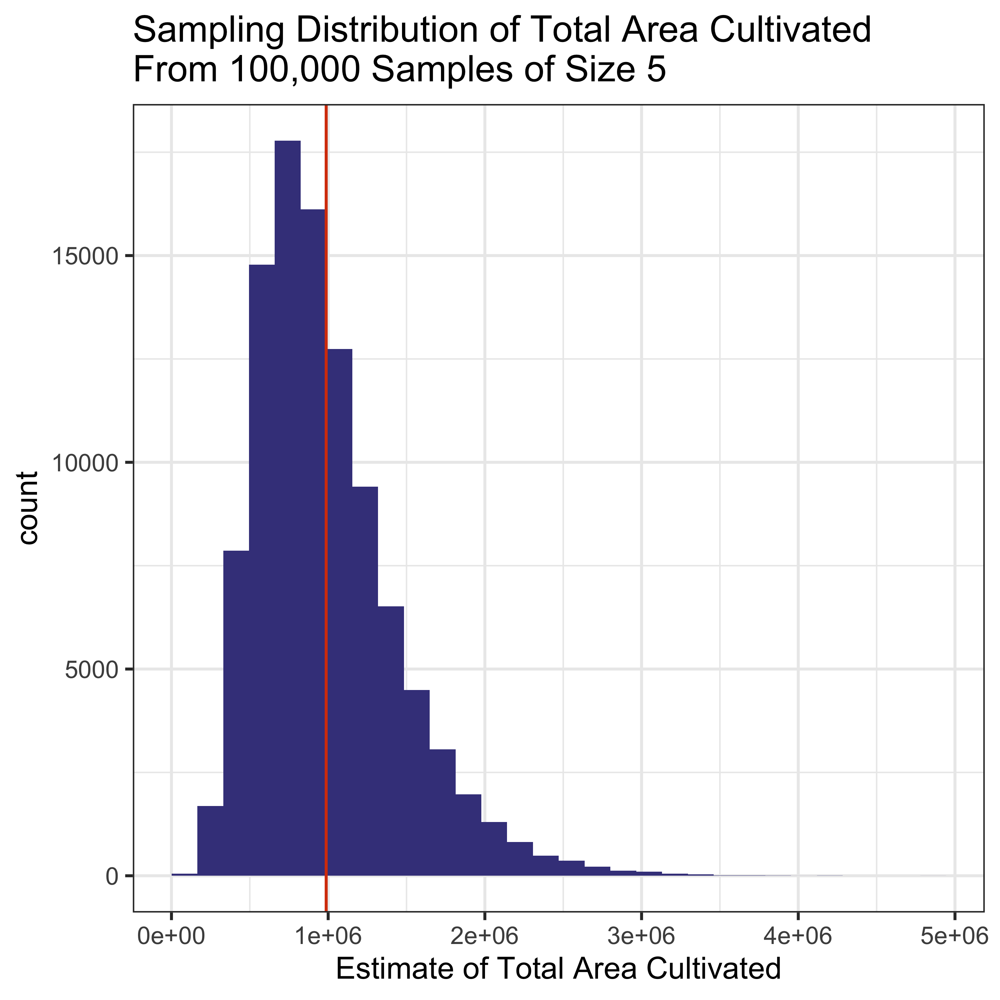
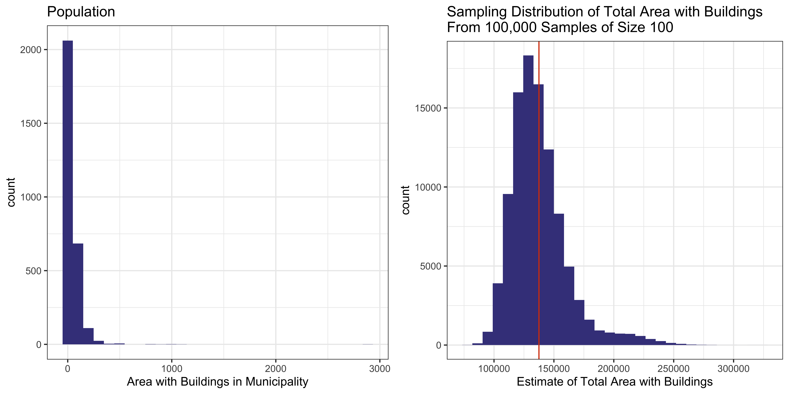
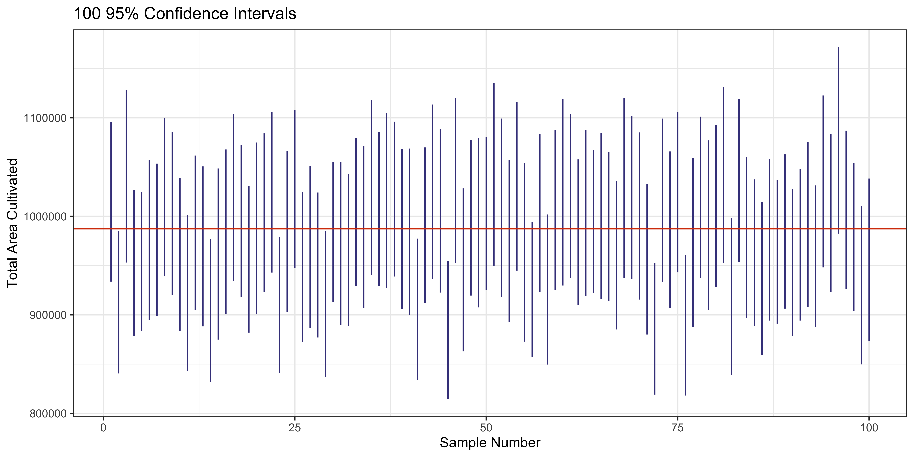
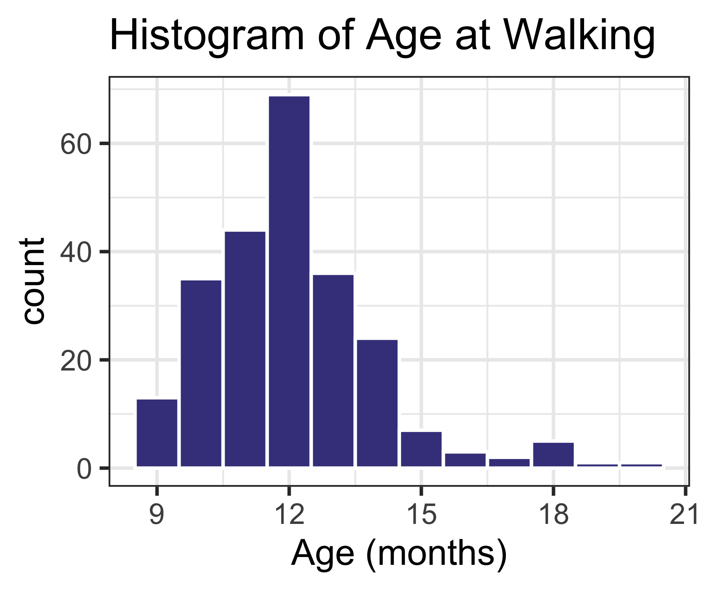
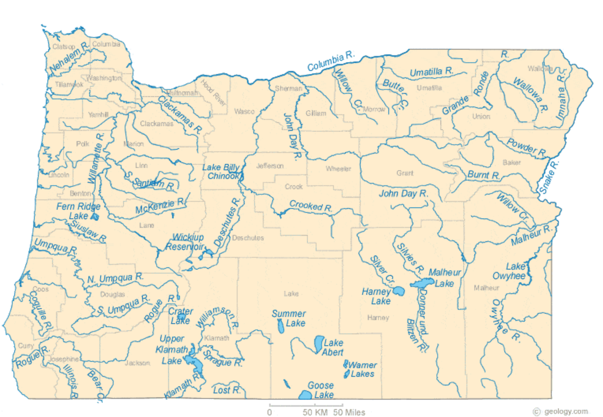

[1] 0.94582SRS Sample Weights, Confidence Intervals, Sample Size Estimation | Intro to Stratified Sampling Design
Recall the inclusion probability \(\pi_i=P(\text{unit }i\text{ in sample})\).
The sampling weight is the reciprocal of the inclusion probability:
\[w_i=\frac{1}{\pi_i}\]
It can be interpreted as the number of population units represented by unit \(i\).
For a SRS:
Because all sampling weights are the same in a SRS, we call it a self-weighting sample.
Estimators can also be written using sampling weights:
\[\hat{t}=\sum_{i\in\mathcal{S}}w_iy_i\]
Last time, saw how to estimate population
for SRS and how to find the standard error of these estimates.
Let \(y_i\) be the numeric response from the \(i\)th member of the population.
| What you want to estimate | Formula | Estimator | Standard Error |
|---|---|---|---|
| Pop total | \(t=\sum\limits_{i=1}^N y_i\) | \(\hat{t}=N\bar{y}\) | \(N\sqrt{\left(1-\frac{n}{N}\right)\frac{s^2}{n}}\) |
| Pop mean | \(\bar{y}_\mathcal{U}=\frac{1}{N}\sum\limits_{i=1}^N y_i\) | \(\bar{y}\) | \(\sqrt{\left(1-\frac{n}{N}\right)\frac{s^2}{n}}\) |
| Pop proportion | \(p=\frac{1}{N}\sum\limits_{i=1}^N\mathbb{1}(y_i=\text{ char})\) | \(\hat{p}\) | \(\sqrt{\left( 1-\frac{n}{N}\right)\frac{\hat{p}(1-\hat{p})}{n-1}}\) |
We’ve also talked about how accurate an estimate is.

Three bullseyes are shown, one for each archer, with crosses indicating places where the arrows strike. The left bullseye has crosses on all sides of the center with some close to the center and some far away. The middle bullseye has crosses only above and to the right of the center and they are far from the center. The right bullseye has crosses on all sides of the center and they are all close to the center.
Confidence intervals (CIs) are used to indicate the accuracy of an estimate. They are relative to a particular percent:
For a \(95\%\) CI:

50 horizontal lines of different lengths and with different start and end points, each representing an interval from a different sample. A vertical line goes roughly through the middle of the lines, crossing most but not all of them.
In intro stat classes, you relied on asymptotic results to construct confidence intervals for an unknown mean \(\mu\).
The central limit theorem says that for a random sample with replacement, the probability distribution of \(\sqrt{n}(\bar{y}-\mu)\) converges to a normal distribution with mean 0 and variance \(\sigma^2\) as the sample size \(n\) approaches infinity.
However, in most sample surveys, we have a finite population and we are sampling without replacement.
To use asymptotic results, assume that the population is part of a larger superpopulation. Hájek (1960) proved a central limit theorem for simple random sampling without replacement.
Under certain technical conditions and if \(n\), \(N\), and \(N-n\) are all sufficiently large, then the sampling distribution of \[\frac{\bar{y}-\bar{y}_\mathcal{U}}{\sqrt{\left(1-\frac{n}{N}\right)\frac{S^2}{n}}}\] is approximately normal (Gaussian) with mean 0 and variance 1.
A large-sample \(100(1-\alpha)\%\) CI for the population mean is then
\[\begin{equation*} \left[\bar{y}-z_{\alpha/2}\sqrt{\left(1-\frac{n}{N}\right)\frac{S^2}{n}},\,\, \bar{y}+z_{\alpha/2}\sqrt{\left(1-\frac{n}{N}\right)\frac{S^2}{n}}\right] \end{equation*}\]
where \(z_{\alpha/2}\) is the \((1-\alpha/2)\)th percentile of the standard normal distribution.
Because \(S^2\) is often unknown and we need to approximate it by \(s^2\), for large samples a \(95\%\) CI is
\[\begin{equation*} \left[\bar{y}-t_{\alpha/2,n-1}\text{SE}(\bar{y}),\,\, \bar{y}+t_{\alpha/2,n-1}\text{SE}(\bar{y})\right] \end{equation*}\]
where \(t_{\alpha/2,n-1}\) is the \((1-\alpha/2)\)th percentile of the \(t\) distribution with \(n-1\) degrees of freedom and \(\text{SE}(\bar{y})=\sqrt{\left(1-\frac{n}{N}\right)\frac{s^2}{n}}\).
What does “sufficiently large” \(n\), \(N\), and \(N-n\) mean?
Confidence intervals for population totals and proportions are found in the same way.
A \(100(1-\alpha)\%\) CI is
\[\text{estimate} \pm z_{\alpha/2} \text{SE(estimate)}\]
Recall we looked at the sampling distribution for the total area cultivated. This was many SRS of size \(100\) from a population of size \(2896\).

What if we drew a smaller sample? Say \(n=5\).

What if we used \(n=100\), but looked at a variable that was even more skewed? Perhaps the total area with buildings in each municipality, areabuild:

Now suppose \(n=500\) and return to estimating total area cultivated. Let’s draw 100,000 samples and use each to calculate a CI for the population total. The CIs for the first 100 of those samples are shown below:

We can also calculate how many of those 100,000 intervals contain the true population total area cultivated, 987317.
[1] 0.94582Lohr 2.13.15: SRS of 240 children who visited a pediatric outpatient clinic. The frequency distribution for age (in months) of unassisted walking among the children:
| Age (months) | 9 |
|---|---|
| Number of Children | 13 |
Construct a histogram of age at walking. Is the shape normally distributed? Do you think the sampling distribution of the sampling average will be normally distributed?
walkage <- data.frame(age=c(rep(9,13), rep(10,35), rep(11,44), rep(12,69),
rep(13,36), rep(14,24), rep(15,7), rep(16,3),
rep(17,2), rep(18,5), rep(19,1), rep(20,1)))
library(ggplot2)
ggplot(walkage, aes(x=age)) +
geom_histogram(binwidth=1, color="white", fill="#43418A") +
theme_bw() +
labs(x="Age (months)", title="Histogram of Age at Walking")
Find the mean, SE, and a \(95\%\) CI for the average age for onset of free walking.
\[\begin{align*} \bar{y}&= \frac{1}{n}\sum_{i=1}^{240} y_i = 12.0792 \\ \text{SE}(\bar{y})&=\sqrt{\left(1-\frac{n}{N}\right)\frac{s^2}{n}} \approx \sqrt{\frac{s^2}{n}} \\ &= \sqrt{\frac{3.7050}{240}} \\ &= 0.1242 \end{align*}\]
A \(95\%\) CI for the average age is \(12.0792 \pm 1.96(0.1242) = [11.8356, 12.3227]\).
Samples can be expensive to implement, so in practice it may be important to find the minimum sample size needed to guarantee a certain level of precision.
These are calculations done before the sample is conducted.
For an estimate \(\hat{\theta}\) of the population value \(\theta\), if \(\hat{\theta}\) is unbiased and normally distributed:
\[P\left( \frac{|\hat{\theta}-\theta|}{\sqrt{V(\hat{\theta})}} > z_{\alpha/2}\right)=P\left(|\hat{\theta}-\theta|>\underbrace{z_{\alpha/2}\sqrt{V(\hat{\theta})}}_{e}\right)=\alpha\]
The margin of error \(e\) of an estimate \(\hat{\theta}\) is the half-width of the CI, that is \(z_{\alpha/2}\times \text{SE}(\hat{\theta})\).
When estimating the sample mean, the margin of error is
\[e=z_{\alpha/2}\sqrt{\left(1-\frac{n}{N}\right)\frac{S^2}{n}}\]
Solving for \(n\) gives \[n=\frac{z_{\alpha/2}^2S^2}{e^2+\frac{z_{\alpha/2}^2S^2}{N}}\]
\(S^2\) may be unknown, but for large populations where we want to estimate a proportion, use \(S^2\approx p(1-p)\).
\(p(1-p)\) has the largest value when \(p=0.5\), so it is common to use this as a “worst case scenario.”
Suppose we want to estimate the proportion of recipes in the Better Homes & Gardens New Cook Book that do not involve animal products. There are \(N=1251\) recipes in the book.
How large a SRS should we take to get a \(95\%\) CI with margin of error 0.03?
\[\begin{align*} n &= \frac{z_{\alpha/2}^2S^2}{e^2+\frac{z_{\alpha/2}^2S^2}{N}} \\ &= \frac{(1.96)^2(0.5)(1-0.5)}{(0.03)^2+ \frac{(1.96)^2(0.5)(1-0.5)}{1251}} \\ &= 575.88 \end{align*}\]
So we need a sample of at least \(n=576\).
How large a SRS should be taken to get a \(68\%\) CI with margin of error 0.05?
\[\begin{align*} n &= \frac{z_{\alpha/2}^2S^2}{e^2+\frac{z_{\alpha/2}^2S^2}{N}} \\ &= \frac{(1)^2(0.5)(1-0.5)}{(0.05)^2+ \frac{(1)^2(0.5)(1-0.5)}{1251}} \\ &= 92.60 \end{align*}\]
So we need a sample of at least \(n=93\).
There may be cases where we don’t use the finite population correction:
Then a simplified sample size estimate can be used:
\[\begin{align*} e&=z_{\alpha/2}\sqrt{\frac{S^2}{n}} \\ n_0&=\left(\frac{z_{\alpha/2}S}{e}\right)^2 \end{align*}\]
\[e=z_{\alpha/2}\sqrt{\frac{S^2}{n}}\]
Let \(S^2=100\) and say \(n<<N\) so fpc \(\approx 1\). We’re estimating a mean.
What is \(e\) (half-width of CI) for different sample sizes and confidence levels?
Remember, \(e=z_{\alpha/2}\sqrt{\frac{S^2}{n}}\).
| 68% | 95% |
|---|---|
| 100 | 1 |
| 400 | 0.5 |
| 900 | 0.33 |
If \(S^2\) is unknown and we are not estimating a proportion, \(S^2\) can be approximated using a pilot sample, or from data from previous studies or available in the literature.
Lohr 2.13.15: SRS of 240 children who visited a pediatric outpatient clinic. The frequency distribution for age (in months) of unassisted walking among the children:
| Age (months) | 9 |
|---|---|
| Number of Children | 13 |
Suppose the researchers want to do another study in a different region, and wanted a \(95\%\) CI for the mean age of onset of walking to have margin of error 0.5.
Using the estimated standard deviation for these data, what sample size would they need to take?
\[\begin{align*} n &= \left(\frac{z_{\alpha/2}S}{e}\right)^2 \\ &= \left(\frac{(1.96)(\sqrt{3.705})}{0.5}\right)^2 \\ &= 56.93 \end{align*}\]
So we need a sample of at least \(n=57\).
If the variable of interest takes on different mean values in different subpopulations, then more precise estimates may be obtained by taking a stratified sample.
The subpopulations are called strata.
Draw an independent probability sample from each stratum, then pool the information to obtain overall population estimates. If the samples from each stratum are SRS, then we are doing stratified random sampling.
The strata
This means that each unit belongs to exactly one stratum.
Strata membership must be known for every individual in the population.
A pre-specified number of observations from each stratum end up in the sample, rather than allowing the distribution across strata to be random.
We want to estimate the pH of lakes in Oregon.

:scale 75%, Map of Oregon showing major rivers and lakes in blue with county boundaries in gray.
We want to estimate the pH of lakes in Oregon.
We have classified lakes into three groups based on size:
Practical issues we are aware of:
A SRS of lakes could result in:
.orange[Solution]: stratify the sampling units prior to sampling.
Could stratify by:
Public opinion poll designed to estimate the proportion of voters in a county who favor spending more tax revenue on ambulance service. The county contains two cities, A and B.
| Population | Sample | |
|---|---|---|
| Size | \(N\) | \(n\) |
| Number of strata | \(H\) | \(H\) |
| One particular stratum | \(h\in\{1,\ldots,H\}\) | \(h \in\{1,\ldots,H\}\) |
| Size of strata \(h\) | \(N_h\) | \(n_h\) |
| Set of units | \(\mathcal{U}\) | \(\mathcal{S}\) |
| Set of units in stratum \(h\) | \(\mathcal{U}_h\) | \(\mathcal{S}_h\) |
| Value of \(j\)th unit in stratum \(h\) | \(y_{hj}\) | \(y_{hj}, j\in\mathcal{S}_h\) |
| Population | Sample | |
|---|---|---|
| Total in stratum \(h\) | \(t_h\) | \(\hat{t}_h\) |
| Overall total | \(t\) | \(\hat{t}\) |
| Mean in stratum \(h\) | \(\bar{y}_{h\mathcal{U}}\) | \(\bar{y}_{h}\) |
| Overall mean | \(\bar{y}_\mathcal{U}\) | \(\bar{y}\) |
| Proportion in stratum \(h\) | \(p_h\) | \(\hat{p}_h\) |
| Overall proportion | \(p\) | \(\hat{p}\) |
| Variance in stratum \(h\) | \(S_h^2\) | \(s_h^2\) |
The estimate of the population total is
\[\hat{t}_\text{str}=\sum_{h=1}^H\hat{t}_h=\sum_{h=1}^H N_h\bar{y}_h\]
Add up the estimated totals from each of the strata.
The estimate of the population mean is
\[\bar{y}_\text{str}=\frac{\hat{t}_\text{str}}{N}=\sum_{h=1}^H\frac{N_h}{N}\bar{y}_h\]
The estimate of the population proportion is
\[\hat{p}_\text{str}=\sum_{h=1}^H\frac{N_h}{N}\hat{p}_h\]
These are weighted averages of the sample stratum averages, where the weights are the relative sizes of the strata.
A SRS is conducted in each stratum, so for estimating the population mean
\[\begin{align*} E[\bar{y}_\text{str}] &= E\left[ \sum_{h=1}^H \frac{N_h}{N}\bar{y}_h\right] \\ &= \sum_{h=1}^H\frac{N_h}{N}E[\bar{y}_h] \\ &= \sum_{h=1}^H \frac{N_h}{N}\bar{y}_{h\mathcal{U}}\\ &= \bar{y}_\mathcal{U} \end{align*}\]
Same true for \(\hat{t}_\text{str}\) and \(\hat{p}_\text{str}\).
Since we are taking an independent SRS from each stratum,
\[\begin{align*} V(\bar{y}_\text{str}) &= V\left(\sum_{h=1}^H\frac{N_h}{N}\bar{y}_h\right) \\ &=\sum_{h=1}^H\left(\frac{N_h}{N}\right)^2V(\bar{y_h}) \\ &= \sum_{h=1}^H\left(\frac{N_h}{N}\right)^2\left(1-\frac{n_h}{N_h}\right)\frac{S_h^2}{n_h} \end{align*}\]
As before, estimate \(S_h^2\) using \(s_h^2\) so
\[\hat{V}(\bar{y}_\text{str})=\sum_{h=1}^H\left(\frac{N_h}{N}\right)^2\left(1-\frac{n_h}{N_h}\right)\frac{s_h^2}{n_h}\]
Also as before, \[\text{SE}(\bar{y}_\text{str})=\sqrt{\hat{V}(\bar{y}_\text{str})}\]
| Estimator | Variance of Estimator |
|---|---|
| Pop mean | \(\bar{y}_\text{str}=\sum_{h=1}^H \frac{N_h}{N}\bar{y}_h\) |
| Pop total | \(\hat{t}_\text{str}=\sum_{h=1}^H \hat{t}_h\) |
| Pop proportion | \(\hat{p}_\text{str}=\sum_{h=1}^H \frac{N_h}{N}\hat{p}_h\) |
A \(100(1-\alpha)\%\) CI is formed by
\[\hat{\theta}_\text{str}\pm z_{\alpha/2}\text{SE}(\hat{\theta}_\text{str})\]
when either the sample sizes within each stratum are large or the sampling design has a large number of strata.
Recall \(w_i=1/\pi_i\) where \(\pi_i\) is the inclusion probability of unit \(i\).
In SRS, all \(\pi_i\) (and thus \(w_i\)) were the same. This is not necessarily true for stratified sampling!
In stratified sampling, the probability that unit \(j\) of stratum \(h\) is included in the sample is
\[\pi_{hj}=\frac{n_h}{N_h}\]
and as before the sampling weight is the reciprocal of the inclusion probability
\[w_{hj}=\frac{1}{\pi_{hj}}\]
Estimators can also be written in terms of sampling weights, e.g.
\[\begin{equation*} \bar{y}_\text{str}=\frac{\sum\limits_{h=1}^H\sum\limits_{j\in\mathcal{S}_h}w_{hj}y_{hj}}{\sum\limits_{h=1}^H\sum\limits_{j\in\mathcal{S}_h}w_{hj}} = \frac{\sum\limits_{h=1}^H\sum\limits_{j\in\mathcal{S}_h}\frac{N_h}{n_h}y_{hj}}{\sum\limits_{h=1}^H\sum\limits_{j\in\mathcal{S}_h}\frac{N_h}{n_h}} = \frac{\sum\limits_{h=1}^H N_h\bar{y}_h}{\sum\limits_{h=1}^H N_h} = \sum_{h=1}^H\frac{N_h}{N}\bar{y}_h \end{equation*}\]
If \(n_h/N_h\) is the same for each stratum (as in problem 1 on the handout), the stratified sample is called self-weighting. In this case, the estimator will be the same as for SRS. The variance may be different though, because it depends on the stratification.